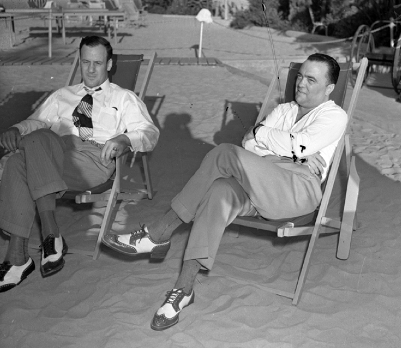

Political Jibberish Generator
"NO, MR. ADDAMS. WE DO NOT KNOW WHERE THEY MEET!"
Whenever I'm lazy and want to learn something without reading, I just leave the book or article out in the open or even just make a mental note about reading it and then the spies read it for me and tell me all about it with their "hints."
Being spied on is like having the worst personalized ads permanently glued to your ass.
"Something about me ... ya know ... people get very busy when I'm on. They always wait to do things when I'm on. I hear things like, 'Sal, tell the waiter bring the food when he's on.' 'We'll go to the men's room when he's on.' I come on, people always gotta go places, do things. I always feel like I'm background for bodily functions."
~ Rodney Dangerfield, "I Don't Get No Respect", 1970
I was partying with my Japanese friends on a Saturday night. We were drinkin', letting everything hang out. I told my buddy Kenji that we sometimes called getting drunk "getting bombed." We were so drunk, we didn't care what we said. With a huge, eccentric, wistful smile on his boyish face, Kenji slowly proclaimed, "Yeah, I wanna get bombed."